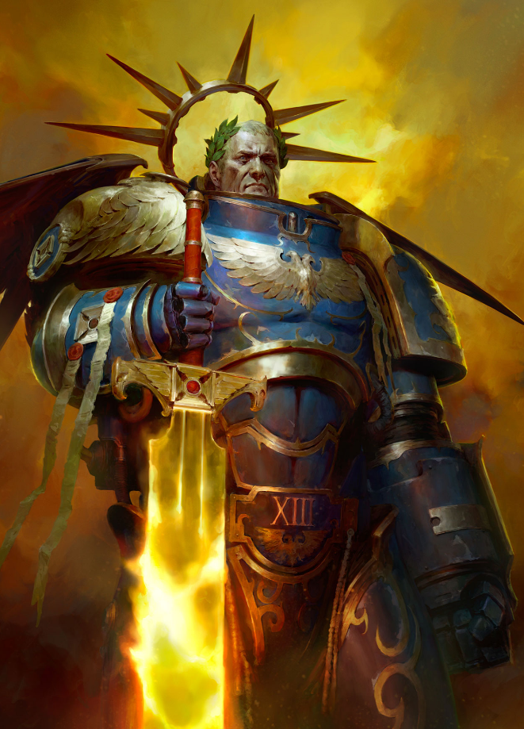

Dossier Primarque 013.M31
Roboute Guilliman fut conçu pour bâtir un empire. Primarque des Ultramarines, il ne se distingua pas seulement par ses capacités militaires, mais par sa compréhension de l’organisation, de la logistique et du gouvernement.

Retrouvé sur Macragge, Guilliman grandit dans une société disciplinée et structurée. Là où d’autres mondes sombraient dans la barbarie ou les conflits internes, Macragge prospéra sous son influence.
Lorsqu’il prit le commandement des Ultramarines, la XIIIe Légion devint l’une des plus vastes et des plus efficaces de la Grande Croisade.
Guilliman ne voyait pas la guerre comme une fin. Il la voyait comme un moyen de construire un ordre durable.
Autour d’Ultramar, il développa un véritable empire régional, capable de fonctionner même loin de Terra. Mondes administrés. Routes sécurisées. Production stable.
Beaucoup considéraient Guilliman comme le plus apte à gouverner l’Imperium après l’Empereur lui-même.
Durant l’Hérésie d’Horus, les Ultramarines furent isolés par la Tempête de la Ruine. Guilliman tenta alors de préserver ce qui pouvait encore l’être.
Après la guerre, il comprit une chose essentielle. Les légions Space Marines étaient devenues trop puissantes.
Pour éviter une nouvelle catastrophe, il rédigea le Codex Astartes.
Ce texte restructura les Space Marines en chapitres plus petits, imposa des doctrines militaires standardisées, et transforma durablement l’organisation militaire impériale.
Beaucoup l’admirèrent. D’autres le détestèrent.
Mais même ses ennemis reconnaissaient son efficacité.
Plus tard, Guilliman fut gravement blessé par Fulgrim. Placé en stase pendant des millénaires, il demeura absent alors que l’Imperium sombrait progressivement dans la superstition et la décadence.
Son réveil en M41 fut un choc.
Il retrouva un Imperium qu’il reconnaissait à peine. Bureaucratie monstrueuse. Fanatisme religieux. Guerre permanente.
Pourtant, il reprit le commandement.
Il lança la Croisade Indomitus, tenta de stabiliser les frontières impériales, et chercha à maintenir un empire déjà en train de s’effondrer.
Guilliman est aujourd’hui l’un des rares Primarques loyalistes encore actifs. Mais même lui semble comprendre l’ampleur du problème.
L’Imperium qu’il dirige n’est plus celui qu’il avait aidé à bâtir.
Il faut comprendre ceci.
Roboute Guilliman n’est pas seulement un guerrier.
Il est un administrateur condamné à gérer les ruines d’un rêve impérial devenu incontrôlable.
Fin de l’extrait. Toute référence au Codex Astartes doit être traitée avec respect doctrinal maximal.